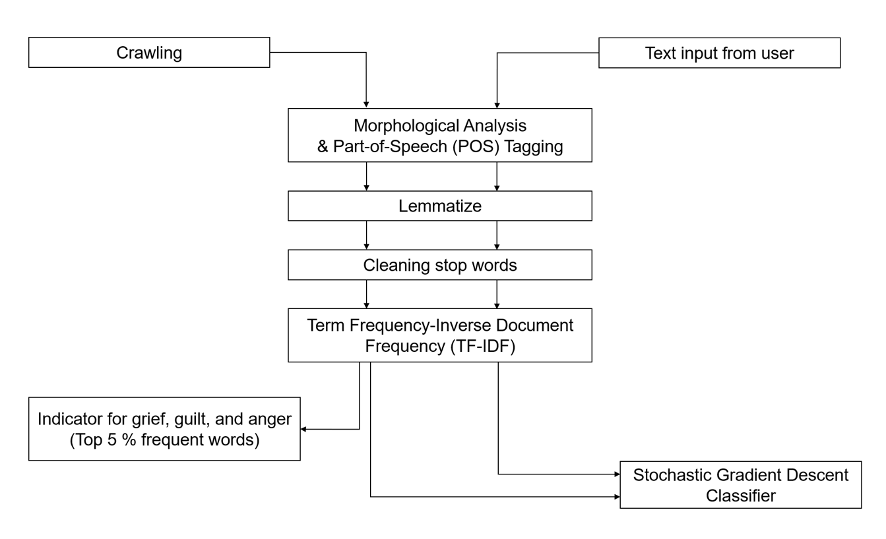

Emotions play a pivotal role in decision-making processes and shape how individuals interpret and respond to their experiences. At the same time, individuals often exhibit different emotional responses to similar situations or stimuli. Such emotional variability can be observed not only in laboratory settings but also in natural environments.
Language is one of the most natural ways through which individuals express their feelings and emotions. This project aimed to propose a simple conversational model for analyzing emotional states and providing supports to individuals who have lost their companion animals. Indicator words associated with specific emotions were extracted from a large crawled dataset and used to measure distress levels in user's text.

This project demonstrated the potential of natural language analysis in detecting emotional states, assessing distress levels, and providing appropriate respones and information through interaction with users.